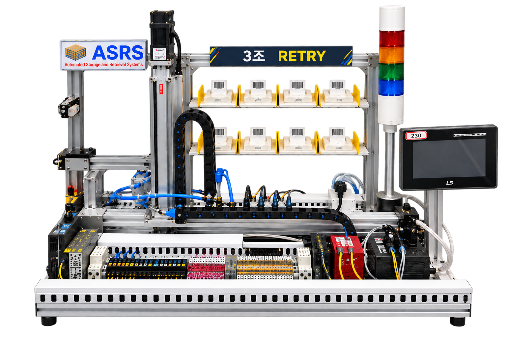

EXPERIENCE / 01
기술 서비스 경험
제품 증상 진단, 메인 PCB·패널·백라이트 교체, 펌웨어 관리 및 기술 상담
전자제품 진단과 디스플레이 품질 확인 경험을 바탕으로 PLC 제어, HMI, 서보 및 산업용 데이터 연동을 학습하고 프로젝트에 적용하고 있습니다.

제품의 동작 상태를 확인하고 문제 원인을 찾아 해결하던 경험을 바탕으로, 이제는 설비가 어떤 조건에서 어떻게 동작하는지 제어 로직의 관점에서 이해하고 있습니다.
제품 증상 진단, 메인 PCB·패널·백라이트 교체, 펌웨어 관리 및 기술 상담
투명 OLED 터치 사이니지 조립, QC 테스트 및 출고 준비
PLC 시퀀스와 HMI 디바이스의 연결 관계를 분석하고, 실제 설비 동작 흐름을 학습
프로젝트와 실습에서 다뤄 온 기술을 분야별로 정리했습니다. 기술별 숙련도는 추후 실제 작업 사례와 함께 구체화할 예정입니다.
시퀀스 제어, 디바이스 분석, 서보 및 자동화 설비 운전 로직
운전 화면, 조작 버튼, 표시 트리거 및 모니터링 화면 구성
PLC 데이터 수집과 표시, 데이터베이스 연동 및 기초 프로그래밍
실제 HMI 화면과 PLC 디바이스를 기준으로 입출고·재고관리 기능을 분석한 ASRS 자동창고 프로젝트입니다.
MELSEC Q Series PLC · XP-Builder HMI · Servo · Pneumatics · Barcode
팀 프로젝트의 전체 기능을 소개하며, 개인 담당 범위와 구현 기여도는 확인 후 별도로 명시할 예정입니다.
XP-Builder 화면을 바탕으로 제작한 브라우저용 HMI 시연 페이지입니다. 현재 BAY 상태 표시, 출고 대기 큐, 화면 전환 등 일부 조작을 테스트할 수 있습니다.
PLC 미연결 · 실제 장비 제어 불가 · 입출고 영상 및 정확한 운전 시퀀스는 추후 연동 예정
연락처와 이력서·PDF 포트폴리오는 공개 범위를 확인한 뒤 추가하겠습니다. 현재는 프로젝트와 기술 학습 내용을 우선 정리하고 있습니다.